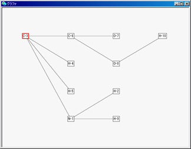
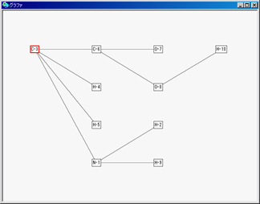

self asGrapher open |
 |
| グリシン分子 | 注目する炭素を中心に樹状整列したグラフ |
分子オブジェクト（ChemoJunMoleculeObject）は、ファイル名（Filename）を有する抽象オブジェクト（ChemoJunAbstractObject）をスーパクラスにして作成されています。ファイル名も抽象オブジェクトも共にオブジェクト（Object）がスーパクラスになります。分子オブジェクトは、分子ビューアから保持されています。
| 分子オブジェクトの構造 |
分子オブジェクトは複数の原子オブジェクト（ChemoJunAtomObject）と複数の結合オブジェクト（ChemoJunAtomConnection）から構成され、結合オブジェクトはどの原子とどの原子を結んでいるのかを表現するため、１対２の関係構造を作ります。
原子オブジェクトは原子記号（atomicSymbol）・原子座標（atomicPoint）・原子半径（atomicRadius）をインスタンス変数として保持し、結合オブジェクトは結合タイプ（bondType）とステレオタイプ（stereoType）をインスタンス変数として保持しています。
結合タイプは、一重結合なのか、二重結合なのか、三重結合なのか、アロマテイック結合なのかを表します。ステレオタイプは、前に出てくる結合なのか、後ろへと入ってゆく結合なのかを表します。
分子オブジェクトは、複数の原子オブジェクトと複数の結合オブジェクトの集約オブジェクトとしての機能を、内部に含み持っており、化学関連ライブラリとして必要な述語やアルゴリズムを実装しています。
【ノードとアークの集合であるグラフへの変換機能】
分子を構成している原子とシリアル番号からノードを作り、結合からアークを作り出します。それらを無向グラフに仕立てあげます。
グラフに変換するメソッド「asGraph」とそのグラフの操作系であるグラファにまで変換するメソッド「asGrapher」を有しています。
self asGrapher open グリシン分子 注目する炭素を中心に樹状整列したグラフ
【可視化のための3次元オブジェクトの生成機能】
ステイック描画のための3次元オブジェクトの生成メソッド「moleculeAsStick」
ボール＆ステイック描画のための3次元オブジェクトの生成メソッド「moleculeAsBallAndStick」
スペースフィル描画のための3次元オブジェクトの生成メソッド「moleculeAsSpaceFill」
スティック＆スペースフィル描画のための3次元オブジェクトの生成メソッド「moleculeAsStickAndSpaceFill」
平面構造描画のための3次元オブジェクトの生成メソッド「moleculeAsPlane」
【特定の原子団（たとえば、カルボニル基やメチル基など）を有するか否かの応答機能】
【シリアル番号を伴って原子および結合を訪ね歩く列挙機能】